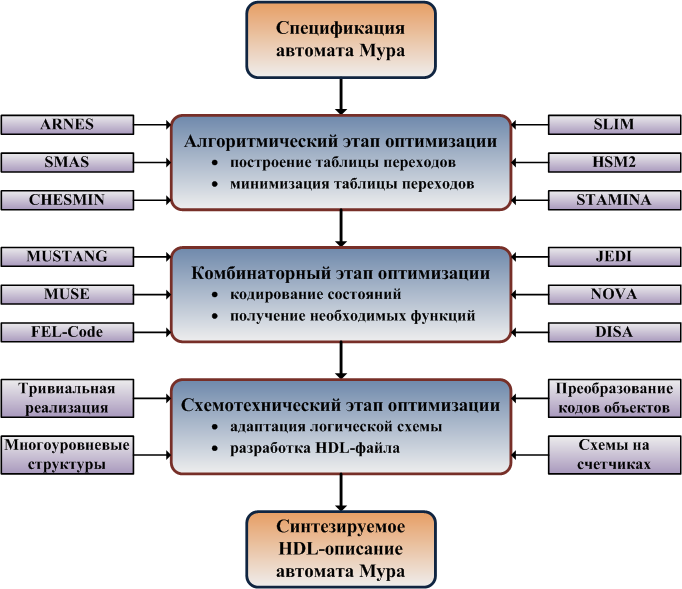

Содержание
- Введение
- 1. Актуальность темы
- 2. Цель и задачи исследования, планируемые результаты
- 3. Обзор исследований и разработок
- 3.1 Обзор мировых исследований
- 3.2 Обзор национальных разработок
- 3.3 Обзор локальных результатов
- 4. Разработка и оптимизация архитектуры нейросетевого распознавания
- Выводы
- Список источников
Введение
Визуальное распознавание речи (Visual Speech Recognition, VSR), также известное как чтение по губам, представляет собой междисциплинарное направление на стыке компьютерного зрения, обработки сигналов и глубокого обучения. Повышение точности автоматического анализа динамики артикуляции открывает широкие возможности для создания ассистивных технологий, систем биометрической аутентификации и повышения помехоустойчивости акустических систем распознавания речи в шумных условиях.
1. Актуальность темы
Несмотря на значительные успехи в области автоматического распознавания речи по аудиосигналу, традиционные системы критически теряют точность при высоком уровне фонового шума. В таких сценариях визуальный канал остается наиболее надежным источником информации. Разработка эффективных нейросетевых архитектур, способных извлекать временные и пространственные признаки артикуляции с минимальной вычислительной сложностью, является актуальной научно-технической задачей.
2. Цель и задачи исследования, планируемые результаты
Целью исследования является повышение точности и оптимизация вычислительной эффективности нейросетевых моделей визуального распознавания речи за счет использования специализированных методов предобработки, аугментации и оптимизации архитектуры нейронных сетей.
Основные задачи исследования:
- Провести систематический анализ современных архитектур deep learning в задаче Visual Speech Recognition;
- Разработать пайплайн локализации, трекинга и предобработки областей артикуляции (ROI);
- Исследовать влияние специализированных методов аугментации кадров губ на обобщающую способность моделей;
- Спроектировать и реализовать комбинированную нейросетевую архитектуру;
- Оценить производительность и точностные характеристики разработанной модели на русскоязычных датасетах.
Объект исследования: процессы и методы автоматического визуального распознавания речи по видеопоследовательности.
Предмет исследования: нейросетевые архитектуры, методы извлечения пространственно-временных признаков и алгоритмы аугментации видеокадров артикуляции.
3. Обзор исследований и разработок
3.1 Обзор мировых исследований
В международном научном сообществе ключевые результаты в области VSR связаны с применением 3D-конволюционных сетей (3D CNN), рекуррентных архитектур (LSTM/BiLSTM) и механизмов внимания (Self-Attention, Transformers).
3.2 Обзор национальных разработок
Национальные исследования активно развиваются в направлении создания и адаптации русскоязычных датасетов видеозаписей артикуляции, а также в адаптации нейросетевых подходов под особенности фонетики русского языка.
3.3 Обзор локальных результатов
В рамках исследований, проводимых в Кубанском государственном университете (КубГУ), внимание уделяется оптимизации алгоритмов обработки видеопотока и проектированию компактных моделей для запуска на локальных устройствах.
4. Разработка и оптимизация архитектуры нейросетевого распознавания
В ходе работы спроектирована гибридная архитектура, сочетающая 3D-сверточные блоки для первичного выделения пространственно-временных признаков и слои BiLSTM/Transformer для учета контекста последовательности кадров.

Рисунок 1 — Структурная схема конвейера распознавания речи по губам
Выводы
Выпускная квалификационная работа посвящена исследованию и созданию оптимизированных методов визуального распознавания речи. В процессе выполнения работы получены следующие результаты:
- Сформирован эффективный пайплайн предобработки и выделения областей губ из видеопотока;
- Определены наиболее эффективные техники аугментации визуальных данных;
- Реализована и протестирована модель глубокого обучения, продемонстрировавшая высокую точность распознавания;
- Проведена оценка вычислительной сложности модели для целевых вариантов применения.
Список источников
- Chung J. S., Senior A., Vinyals O., Zisserman A. Lip Reading Sentences in the Wild // IEEE Conference on Computer Vision and Pattern Recognition (CVPR). — 2017.
- Petridis S., Stafylakis T., Ma P., Cai Z., Lin L., Pantic M. End-to-End Visual Speech Recognition for Small Vocabulary Series // IEEE Transactions on Pattern Analysis and Machine Intelligence. — 2020.